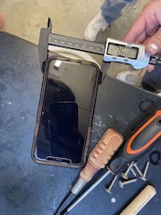
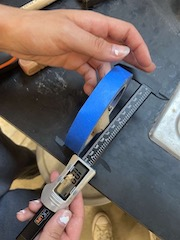
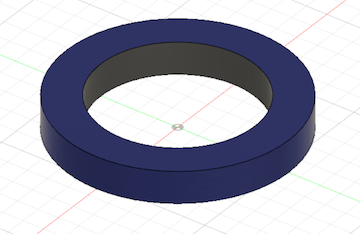
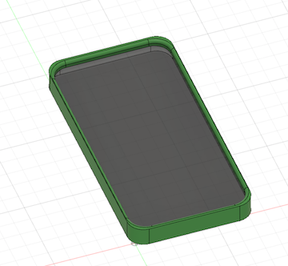

The assignment for our second lesson was to design and lasercut a press-fit construction kit. I brainstormed many ideas, but ultimately I settled on making a few shapes that would fit together.
These were the designs I came up with. Fusion 360 was tough for me to understand at first, but once I got it, my designs were a lot easier to make. I put it on a thumb drive and brought it to the laser cutter.
The first printing was okay, but the fit was a little loose. I also didn't like how the square looked so I decided to focus on the gear and triangle. I made some slight adjustments, then reprinted.
Success!! I finally got a product I liked, and I loved all the funky ways you could combine everything. I had fun doing this project and I hope we do more things like this in the future.
The assignment for this class was to measure then model 2 items from the lab. I chose to model a phone as well as a roll of masking tape. Here is me doing some measurements!
 I had a lot of fun modeling them and I'm proud of how they turned out–although there wasn't the right color for my case so I did green, because why not.
 